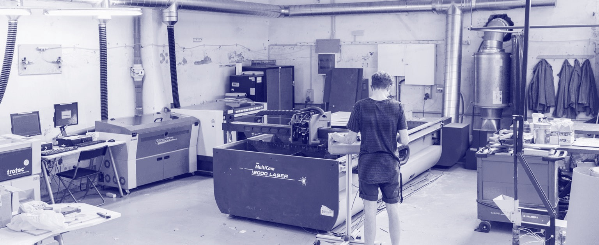
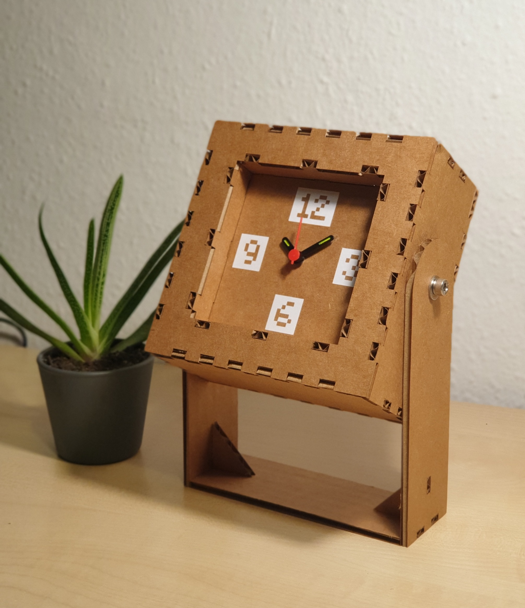

/laser_cut_&_2D_parametric
(15_february_2022)
This week's topic of FabAcademy was about computer-controlled cutting and parametric design.
The class consisted basically of two main parts: a talk on how a laser cutter works (CO2 gas,
laser, lens, bed) and the things one has to take into account before cutting (material, power,
speed, adjustments, files, etc.).

Lately, I have been using the laser cutter at Ateneu de Fabricació a lot and I already knew the way
it works. However, I found it really interesting to learn how the machine works, the importance of
the frequency of the laser, and many different techniques to turn a laser cut into something
meaningful and complex. They also gave us some tips about how to prepare a file properly by using
nesting applications like SVG Nest or Rhino Nest, things to consider like making sure the design is
in 2D, with the lines joined and without duplicates.
After this, we went to the laser cutter room and had a brief explanation of how to use that
specific machine properly. The main things to take into account were the focus of the machine,
the extraction and finally knowing the adequate settings for the material regarding power, speed
and frequency.
.the_sketchy_clock
This week's task consisted of creating some parametric design to be cut on the laser cutter out
of cardboard or MDF. Another requirement for the task was to have a press-fit assembly, without
the need for screws or glue. In addition, we had the chance of using the vinyl cutter in case we
wanted to add some decoration to our objects.
In my case, I decided to relate the task again to the topic I'm working on: reusing obsolete objects.
I found this cheap old clock somewhere in my house and decided I would reshape and redesign it
from scratch, just using the original mechanism. I thought of many designs that had flat surfaces
in order not to use kerfing techniques to make it easier. These are some drawings and the one I
finally chose in the middle:
Then, I made the 2D parametric design on Fusion360 completely unfolded and prepared the files for
the laser cutter. It was quite tricky to imagine each joint being unfolded since there wasn't a way
to verify properly the assembly of the parts. However, I measured twice and cut once and the result
was just perfect. I made it out of cardboard of 4mm thick.
Before assembling the whole clock, I also designed and cut some numbers with the vinyl cutter. I
sticked them to the cardboard and also sticked the mechanism to make it more rigid. Finally, I
builder the figure and used some screws to join the body of the clock with the legs. Hereunder
some pictures of the process:
Finally, these are the images from the final result of the clock. I am really happy with how it came
out since it is exactly how I imagined it: simple, sketchy but coherent and cute at the same time.
I am sure I will replicate it soon.
